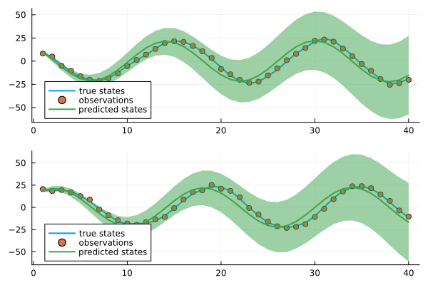

Learning
This guide covers the Learning API, which provides endpoints for training and inference with RxInfer models. You'll learn how to create, manage, and interact episodes as well as perform a simple learning task.
Prerequisites
Before using the Models API, you need a valid authentication token. If you haven't obtained one yet, please refer to the Authentication guide. The examples below assume you have already set up authentication:
import RxInferClientOpenAPI.OpenAPI.Clients: Client
import RxInferClientOpenAPI: ModelsApi
client = Client(basepath(ModelsApi); headers = Dict(
"Authorization" => "Bearer $token"
))
api = ModelsApi(client)Historical Dataset
For this demonstration, we'll work with a synthetic dataset that represents a two-dimensional dynamical system. The data is generated by rotating a two dimensional vector around the origin, creating a circular motion pattern. The dataset consists of:
- Hidden states: The true positions in 2D space
- Observations: Noisy measurements of these positions
- Training and test sets: The data is split to evaluate the model's predictive performance
The visualization below shows both the true states and their corresponding noisy observations for both training and test periods.
dataset = load_dataset()Creating a Model Instance
To analyze this dataset, we'll use the LinearStateSpaceModel-v1, which is designed to learn and predict the dynamics of linear state-space systems. This model is particularly suitable for our rotating signal as it can capture the underlying circular motion pattern.
import RxInferClientOpenAPI: create_model_instance, CreateModelInstanceRequest
request = CreateModelInstanceRequest(
model_name = "LinearStateSpaceModel-v1",
description = "Example model for demonstration",
arguments = Dict("state_dimension" => 2, "horizon" => length(dataset.x_test))
)
response, _ = create_model_instance(api, request)
instance_id = response.instance_id"dda2e74a-2957-4ef2-b0a5-c597d0762da3"Working with Episodes
Episodes serve as containers for organizing training data and metadata in your model. They provide a structured way to:
- Manage different episodes of interacting with the environment
- Store sequential observations and arbitrary metadata attached to each event
- Track experiments and perform learning
- Organize model validation
Listing Episodes
To view all episodes associated with a model instance, use the get_episodes endpoint. This provides an overview of all available training sessions and their current status.
Each model automatically creates a default episode when it is created.
import RxInferClientOpenAPI: get_episodes
response, _ = get_episodes(api, instance_id)
response1-element Vector{RxInferClientOpenAPI.EpisodeInfo}:
{
"instance_id": "dda2e74a-2957-4ef2-b0a5-c597d0762da3",
"episode_name": "default",
"created_at": "2025-04-14T12:52:17.415+00:00",
"events": []
}
Episode Details
For detailed information about a specific episode, including its events and metadata, use the get_episode_info endpoint. This is particularly useful when analyzing training history or debugging model behavior.
import RxInferClientOpenAPI: get_episode_info
response, _ = get_episode_info(api, instance_id, "default")
response{
"instance_id": "dda2e74a-2957-4ef2-b0a5-c597d0762da3",
"episode_name": "default",
"created_at": "2025-04-14T12:52:17.415+00:00",
"events": []
}
As we can see, the default episode has no events since we haven't loaded any data into it yet nor run any inference.
Creating New Episodes
When you want to start a new training session or experiment, create a new episode using the create_episode endpoint.
import RxInferClientOpenAPI: create_episode, CreateEpisodeRequest
create_episode_request = CreateEpisodeRequest(name = "experiment-1")
response, _ = create_episode(api, instance_id, create_episode_request)
response{
"instance_id": "dda2e74a-2957-4ef2-b0a5-c597d0762da3",
"episode_name": "experiment-1",
"created_at": "2025-04-14T12:52:23.876+00:00",
"events": []
}
Creating a new episode automatically sets it as the current active episode. You can verify this by checking the model instance details:
import RxInferClientOpenAPI: get_model_instance
response, _ = get_model_instance(api, instance_id)
response.current_episode"experiment-1"To confirm the new episode has been added to the list:
import RxInferClientOpenAPI: get_episodes
response, _ = get_episodes(api, instance_id)
response2-element Vector{RxInferClientOpenAPI.EpisodeInfo}:
{
"instance_id": "dda2e74a-2957-4ef2-b0a5-c597d0762da3",
"episode_name": "default",
"created_at": "2025-04-14T12:52:17.415+00:00",
"events": []
}
{
"instance_id": "dda2e74a-2957-4ef2-b0a5-c597d0762da3",
"episode_name": "experiment-1",
"created_at": "2025-04-14T12:52:23.876+00:00",
"events": []
}
Loading External Data into an Episode
The attach_events_to_episode endpoint allows you to load historical data into episodes for training or analysis. This is essential when you have pre-collected data that you want to use for model training or evaluation.
Each event in your dataset should include:
data: The actual observation or measurement data (required)timestamp: The time when the event occurred (optional, defaults to current time)metadata: Additional contextual information about the event (optional)
import Dates
import RxInferClientOpenAPI: attach_events_to_episode, AttachEventsToEpisodeRequest
# Create events with timestamps and data
events = map(dataset.y_train) do y
return Dict("data" => Dict("observation" => y))
end
# Create the request to attach events
request = AttachEventsToEpisodeRequest(events = events)
# Attach events to an episode
response, _ = attach_events_to_episode(api, instance_id, "experiment-1", request)
response{
"message": "Events attached to the episode successfully"
}
To verify that your data was loaded correctly:
import RxInferClientOpenAPI: get_episode_info
response, _ = get_episode_info(api, instance_id, "experiment-1")
response.events[1:5] # show only the first 5 events to avoid overwhelming the console5-element Vector{Dict{String, Any}}:
Dict("data" => Dict{String, Any}("observation" => Any[1.244575106015055, 3.0632243029778676]), "id" => 1, "metadata" => Dict{String, Any}(), "timestamp" => "2025-04-14T12:52:26.222")
Dict("data" => Dict{String, Any}("observation" => Any[-1.6834703719822321, 1.461241152437244]), "id" => 2, "metadata" => Dict{String, Any}(), "timestamp" => "2025-04-14T12:52:26.269")
Dict("data" => Dict{String, Any}("observation" => Any[-1.3456887671997577, 3.920702204856826]), "id" => 3, "metadata" => Dict{String, Any}(), "timestamp" => "2025-04-14T12:52:26.269")
Dict("data" => Dict{String, Any}("observation" => Any[-1.1582441231697973, 2.568504022892072]), "id" => 4, "metadata" => Dict{String, Any}(), "timestamp" => "2025-04-14T12:52:26.269")
Dict("data" => Dict{String, Any}("observation" => Any[-2.301247518905254, 0.39501165994009846]), "id" => 5, "metadata" => Dict{String, Any}(), "timestamp" => "2025-04-14T12:52:26.269")- Events can be loaded into any episode, not just the default one
- Use
wipe_episodeto clear an episode's data and start fresh - Events persist across episode switches
- Deleting a model instance removes all associated episodes and their data
Learn the Parameters of the Model
To learn the parameters of the model on the loaded data, create a learning request that specifies which episodes to use for training:
import RxInferClientOpenAPI: LearnRequest, run_learning
learn_request = LearnRequest(
episodes = ["experiment-1"] # learn from the "experiment-1" episode explicitly
)
learn_response, _ = run_learning(api, instance_id, learn_request)
learn_response{
"learned_parameters": {
"A": {
"shape": [
2,
2
],
"encoding": "array_of_arrays",
"data": [
[
0.9220845907439372,
-0.37829259100131274
],
[
0.394717909766297,
0.926218666789732
]
],
"type": "mdarray"
}
}
}
The learning process returns a LearnResponse containing the model's learned parameters. The model's state has been updated automatically with the new parameters. We can verify this by fetching the current model parameters:
import RxInferClientOpenAPI: get_model_instance_parameters
response, _ = get_model_instance_parameters(api, instance_id)
response{
"parameters": {
"A": {
"shape": [
2,
2
],
"encoding": "array_of_arrays",
"data": [
[
0.9220845907439372,
-0.37829259100131274
],
[
0.394717909766297,
0.926218666789732
]
],
"type": "mdarray"
}
}
}
After the learning process is complete, we can use the model to make predictions on new data by calling the inference endpoint. Here we also chose the desired output format for the inference response. Read more about preferences in the Request Preferences section.
import RxInferClientOpenAPI.OpenAPI.Clients: set_header
set_header(client, "Prefer", "distributions_repr=data,distributions_data=mean_cov,mdarray_data=diagonal,mdarray_repr=data")That ensures that the inference response will be in the desired format suitable for plotting.
import RxInferClientOpenAPI: InferRequest, run_inference
inference_request = InferRequest(
data = Dict("observation" => dataset.y_train[end], "current_state" => dataset.x_train[end])
)
inference_response, _ = run_inference(api, instance_id, inference_request)Here are for example the first 5 estimated states:
states[1:5]5-element Vector{Any}:
Dict{String, Any}("mean" => Any[9.788299828192638, 18.87511333744078], "cov" => Any[1.496672638190117, 1.5068416232425486])
Dict{String, Any}("mean" => Any[1.8853249111153871, 21.346099556887566], "cov" => Any[2.4834304128326044, 2.5308411404565248])
Dict{String, Any}("mean" => Any[-6.3366422592936225, 20.515327378639963], "cov" => Any[3.4586545751272104, 3.5738416897425163])
Dict{String, Any}("mean" => Any[-13.60371653206428, 16.500492984098166], "cov" => Any[4.429585520232577, 4.628417544446024])
Dict{String, Any}("mean" => Any[-18.785791632649442, 9.913434057484105], "cov" => Any[5.4080648232684165, 5.682253651014855])Let's plot all the results:
The plot above demonstrates the model's predictive performance. The predicted states closely follow the true hidden states, with some deviation due to the inherent stochastic nature of the system.
Deleting Episodes
When an episode is no longer needed, you can remove it using the delete endpoint.
import RxInferClientOpenAPI: delete_episode
response, _ = delete_episode(api, instance_id, "experiment-1")
response{
"message": "Episode deleted successfully"
}
Deleting the current episode automatically switches to the default episode.
response, _ = get_model_instance(api, instance_id)
response.current_episode"default"If you delete an episode after learning, the model state will not be affected. The model will continue to use the learned parameters.
The default episode cannot be deleted. While you can clear the default episode's data, the episode itself must remain
# Attempting to delete the default episode
response, _ = delete_episode(api, instance_id, "default")
response{
"error": "Bad Request",
"message": "Default episode cannot be deleted, wipe data instead"
}
Wiping Data from an Episode
To clear the data from an episode, use the wipe_episode endpoint. This will remove all events from the episode, effectively resetting it to an empty state.
import RxInferClientOpenAPI: wipe_episode
# Clearing the default episode's data
response, _ = get_episode_info(api, instance_id, "default")
response{
"instance_id": "dda2e74a-2957-4ef2-b0a5-c597d0762da3",
"episode_name": "default",
"created_at": "2025-04-14T12:52:17.415+00:00",
"events": [
{
"event_id": 1,
"data": {
"current_state": [
17.05490098679752,
13.49735432603276
],
"observation": [
15.249051268376968,
13.493332718321746
]
},
"timestamp": "2025-04-14T12:52:56.575"
}
]
}
# Clearing the default episode's data
response, _ = wipe_episode(api, instance_id, "default")
response{
"message": "Episode wiped successfully"
}
response, _ = get_episode_info(api, instance_id, "default")
response{
"instance_id": "dda2e74a-2957-4ef2-b0a5-c597d0762da3",
"episode_name": "default",
"created_at": "2025-04-14T12:52:17.415+00:00",
"events": []
}